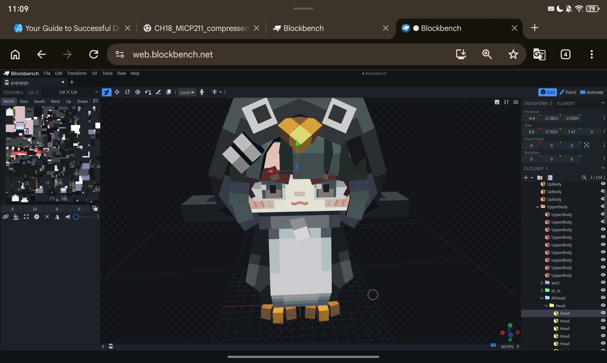
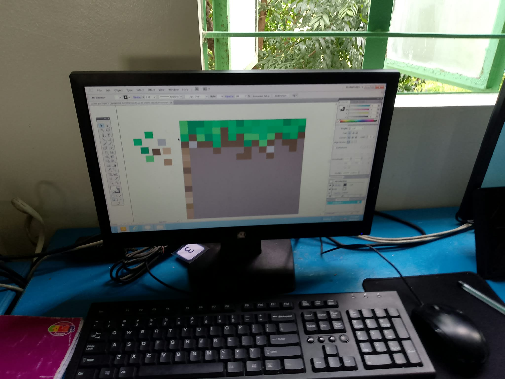
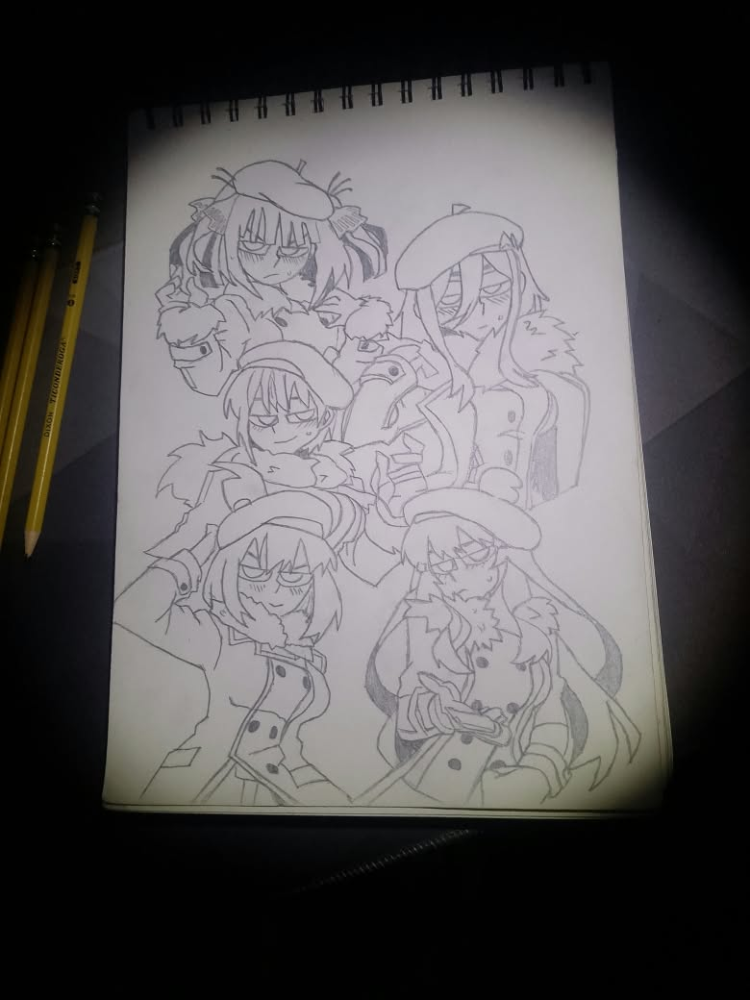
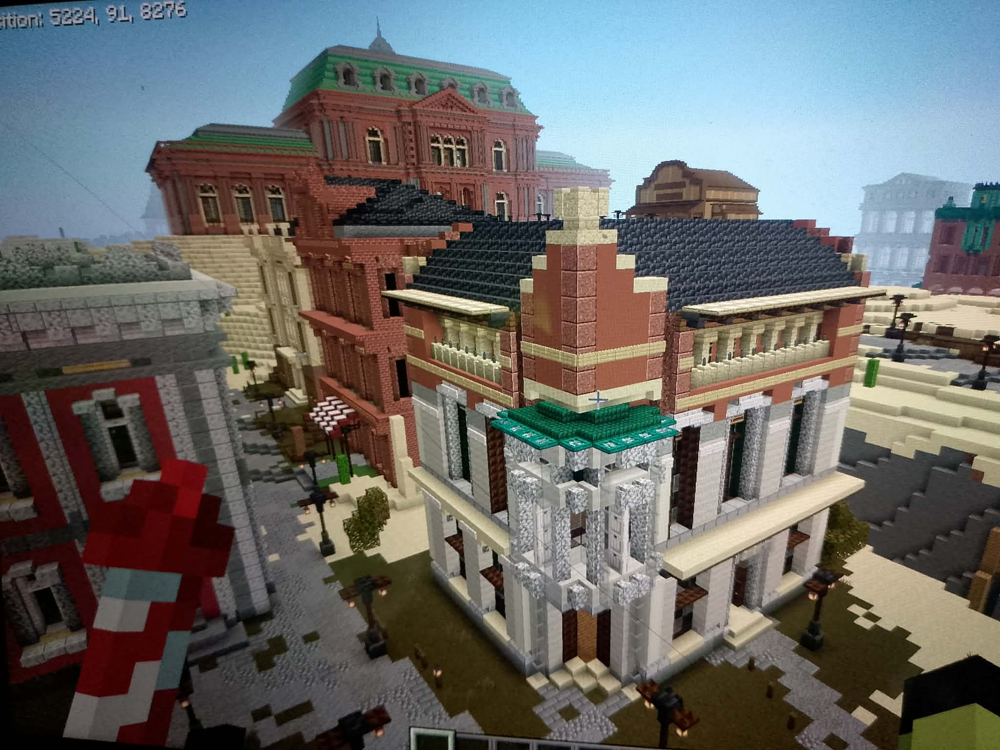

HARD SKILLS
What I can do
1) 3D Modeling -
I consider 3D modeling one of my hard skills because it allows me to turn ideas into three-dimensional objects.
While modeling, I have to think about shapes, proportions, structure, and details.
It has helped me improve my creativity, patience, and understanding of how objects are designed in a 3D space.
2) Digital Graphic Design -
I chose Digital Graphic Design as one of my hard skills because I enjoy creating things digitally.
I made this design using Adobe Illustrator, where I practiced creating shapes, arranging objects, and working with colors.
3) Drawing -
I consider drawing one of my hard skills because it is something I have developed through practice.
Drawing allows me to express ideas visually and improve my creativity and attention to detail.
4) 3D Design -
I consider 3D design a skill because building in Minecraft requires me to plan how different parts of a structure will fit together.
I have to think about proportions, shapes, space, and details before completing a build.
Although I practice this through Minecraft, the experience also helps me develop creativity.
PROOF / EVIDENCE
Things I've actually made
Here are some examples of my school projects,
activities, and work that show the skills I have developed.

GuguGaga Penguin 3D model
I made this 3D model back then when GuguGaga Penguin was famous. Its an Ai chibi character from a game.
And i made it on Blockbench, Blockbench is a 3D software for Minecraft.

Dirt Block Design
I made this Digital art on adobe illustrator when i was on the 9th grade. Its a project worth 60% of our grade so i made
it into a dirt block.

Fav Drawing
This is one of my favorite drawings. I have a lot of drawings but im gonna show this one because its also my favorite anime
with the helltaker theme which is cool.

Law HQ project
One of my favorite projects so far. Its the Law HQ from a heavily scripted and cinematic story Unstable SMP making this was so worth it.
REFLECTION
What these projects taught me
Looking back at the projects I have made, I realized that I have developed more skills than I originally thought.
From coding websites and creating digital art to drawing, 3D modeling, and building in Minecraft, each project gave me a different way to practice my creativity and problem solving skills.
I also learned that making mistakes is part of the process because I often have to figure out what went wrong and try again.
I still have a lot to learn, but these experiences made me more interested in ICT and motivated me to keep improving my skills for the future.